Coafură & tunsori
- Tuns damă & aranjat spălat, tuns, coafatProgramare
- Tuns bob & tunsori structurateProgramare
- Tuns copiiProgramare
- Coafat & styling ondulat, îndreptat, volumProgramare
Salon de înfrumusețare · Bistrița
La Salon Aiania transformăm firul de păr, conturăm privirea și îngrijim fiecare detaliu. Balayage și blonduri curate, tunsori care cad perfect, coafuri de eveniment și machiaj profesional — lucrate cu răbdare, cu produse premium.
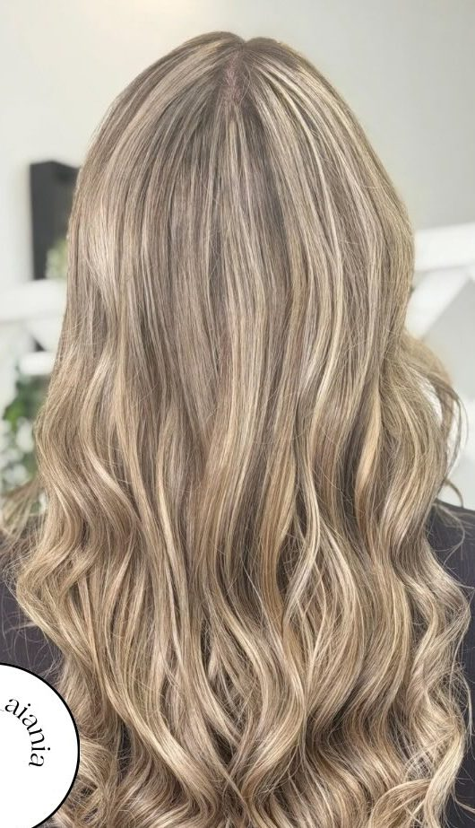
Cine suntem
Salon Aiania este locul din Bistrița unde părul, machiajul și unghiile se întâlnesc sub același acoperiș. O echipă de fete pasionate — Iulia, Ale, Magda și Any — lucrează fiecare la specialitatea ei, de la culoare și tunsoare până la coafuri de eveniment și manichiură.
Aici blondul iese curat, balayage-ul se topește natural, iar coafurile de nuntă sau botez țin toată ziua. Folosim produse profesionale Davines și avem grijă de sănătatea firului de păr la fiecare vizită.
„All about Hair, Nails and Make-up.”
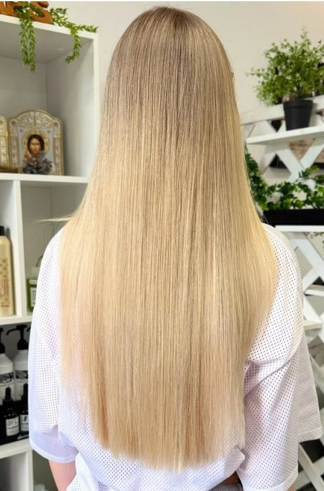
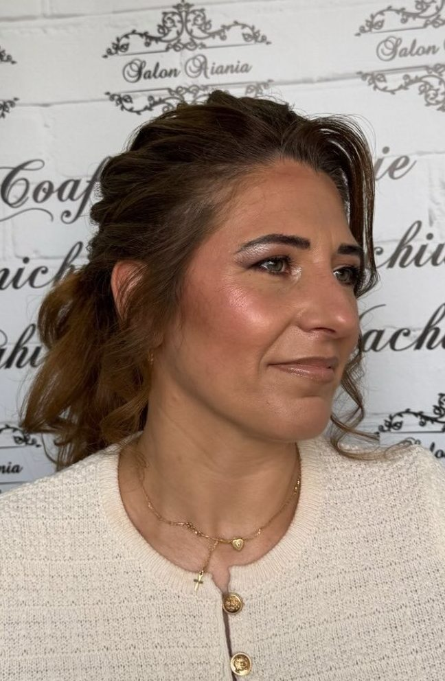
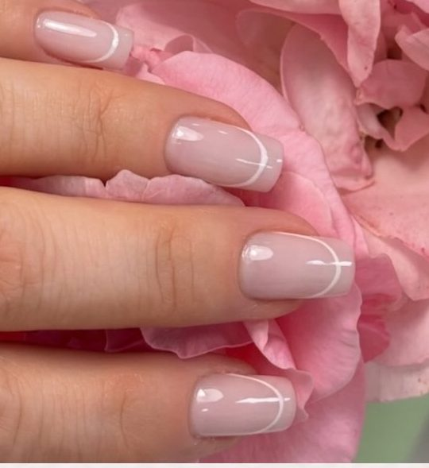
Serviciile noastre
Serviciile se realizează pe bază de programare telefonică. Durata și prețul variază în funcție de lungimea și starea părului — le stabilim împreună la telefon.
✦ Pachete pentru mireasă: coafură, machiaj și manichiură într-o singură programare — sună-ne pentru detalii.
Galerie
Culoare, tunsori, coafuri și machiaj făcute la Salon Aiania. Vezi mai multe zilnic pe Instagram.
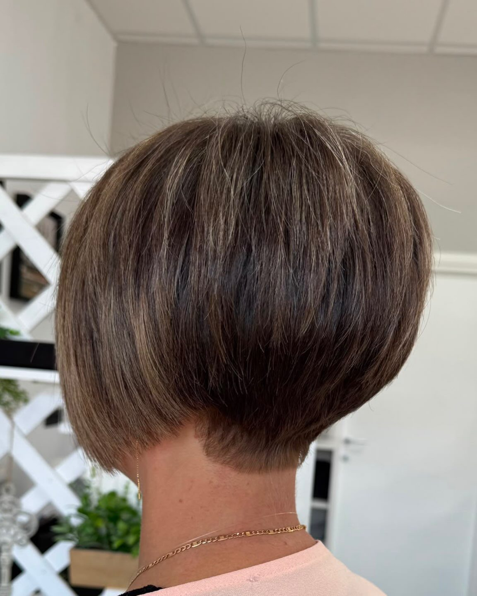
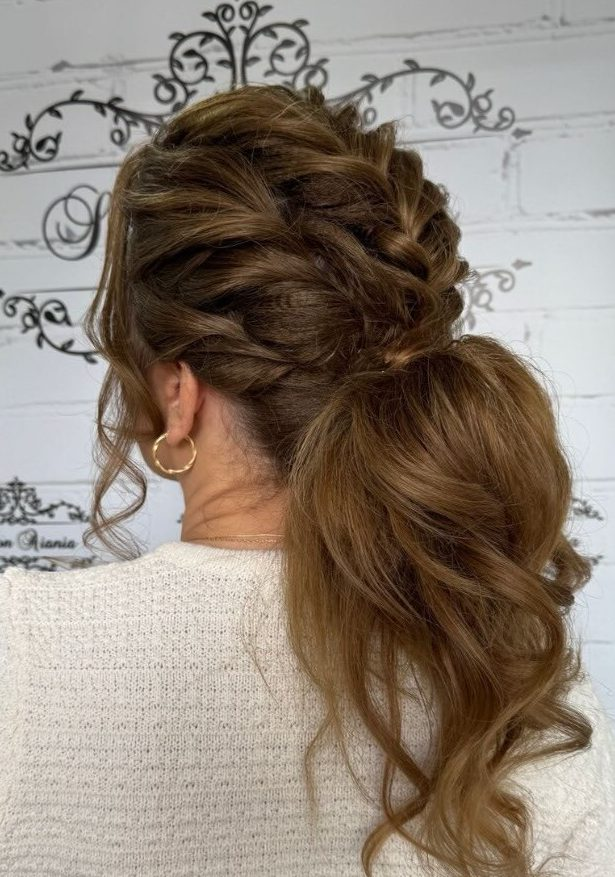
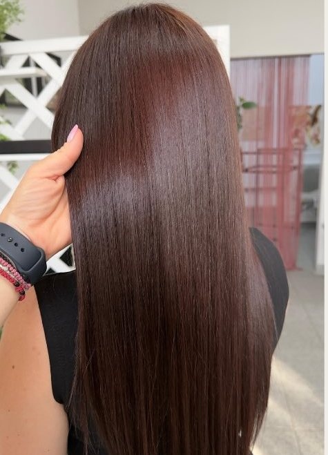
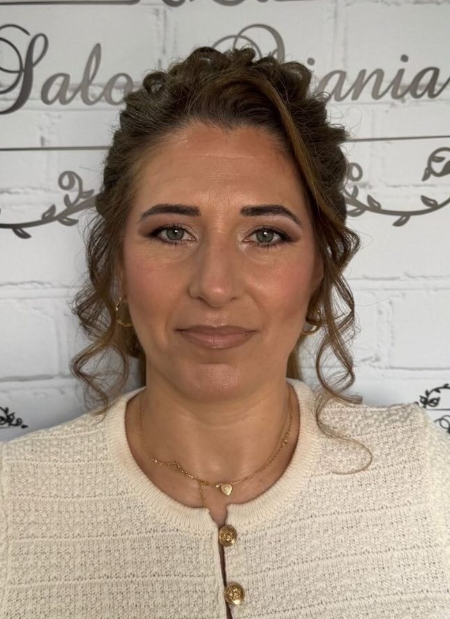
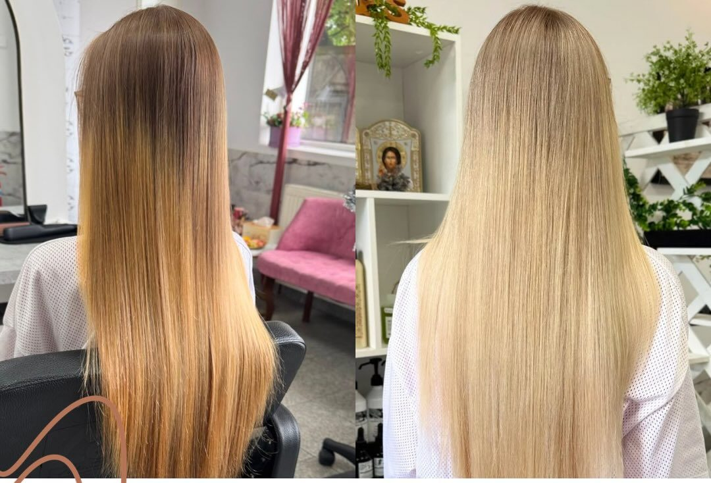
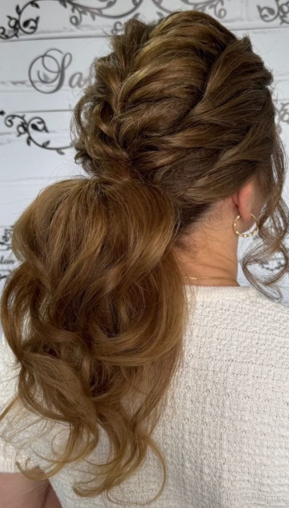
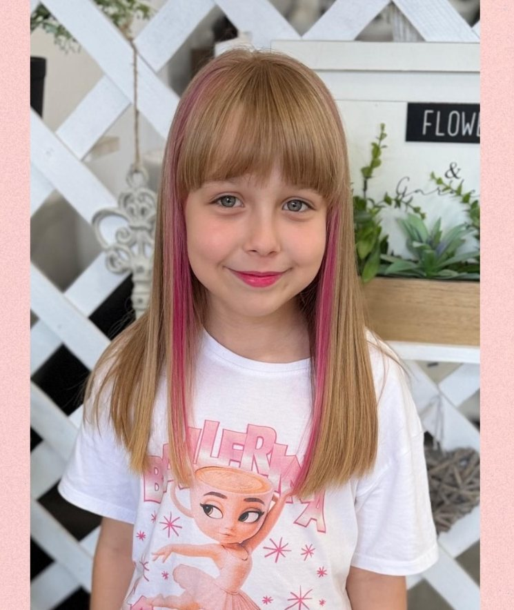
Ce spun clientele
★★★★★Fetele sunt profesioniste și super atente la detalii — plec de fiecare dată cu părul exact cum mi-l doream.
— Clientă Salon Aiania
★★★★★Cel mai frumos blond pe care l-am avut vreodată. Atmosferă caldă și multă răbdare cu părul.
— Clientă Salon Aiania
★★★★★Machiaj și coafură de nuntă impecabile, au ținut toată ziua. Recomand cu toată încrederea!
— Clientă Salon Aiania
98% recomandat din 28 de recenzii pe Facebook · peste 5.400 de urmăritori pe Instagram
Contact & Locație
Str. Ioan Slavici nr. 2-4, colț cu Colibiței
Bistrița, jud. Bistrița-Năsăud
| Programări | Pe bază de rezervare |
|---|---|
| Telefonic | 0751 383 245 |